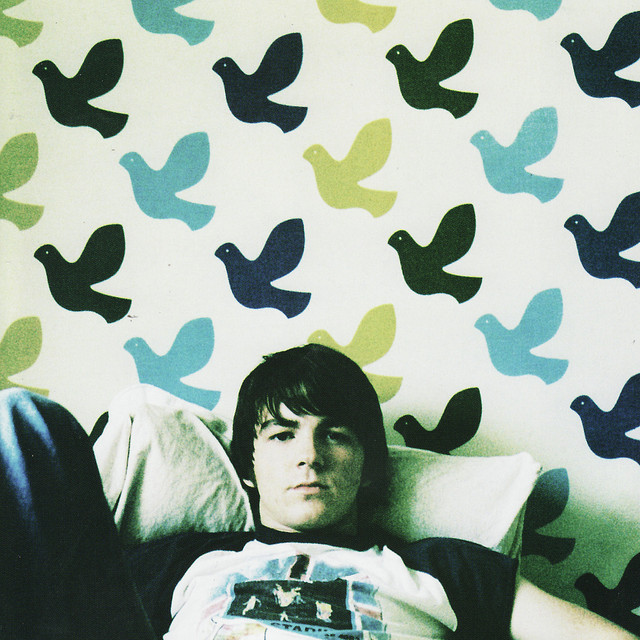
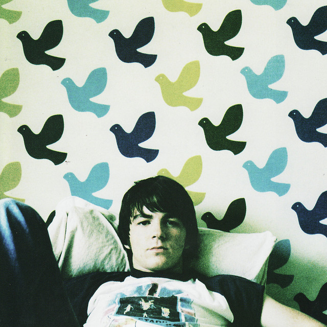

Though he had been acting since he was five, when he was filmed in his first commercial, Drake Bell (born Jared Drake Bell in Orange County, California)
didn’t start playing the guitar until he was cast in the 2001 TV movie Chasing Destiny, also starring the Who’s Roger Daltrey, who gave the young performer
his initial lessons. As a teenager, though Bell was focusing on acting, he continued to play music and write songs on the side, and after a program he was in,
Nickelodeon’s The Amanda Show, was canceled in 2002, and a spinoff, The Drake and Josh Show, was started (it first aired in 2004), Bell was able to finally
show off his chops onscreen, writing the theme song, “Found a Way,” and playing an exaggerated version of his guitarist self named Drake Parker.
Heavily influenced by the Beatles and the Beach Boys, Bell released his debut, Telegraph, independently in 2005; soon after he signed to Universal,
who put out his sophomore record, It’s Only Time, the following year. The live album, Drake Bell in Concert, appeared in 2008 and it wouldn’t be until
2011 that Bell would release any new material, with the stopgap EP A Reminder.
Returning to the studio some two years later with childhood hero Brian Setzer, Bell released his third album, the rockabilly-inspired Ready Steady Go! on
Surfdog Records in 2014. With music being his first love, Drake made the most rockin’ and exciting album of his career. Wait ’til you hear this collection
of melodic pop, and at the same time hard-hitting rock n roll. Drake’s millions of fans around the world have been very happy with what they have heard.
 
